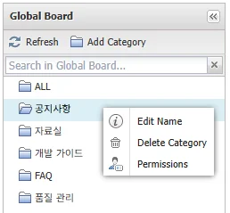
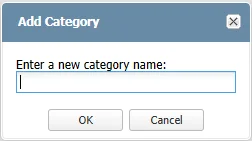
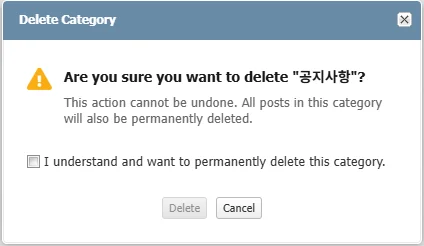
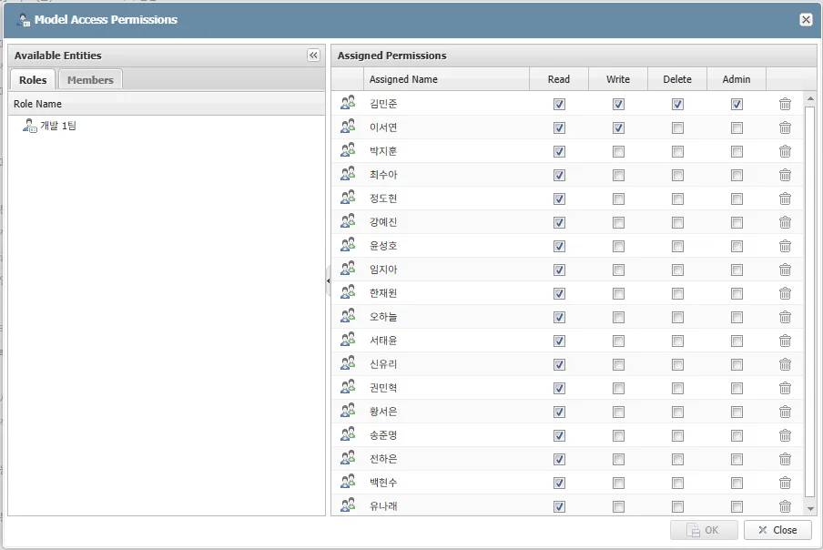
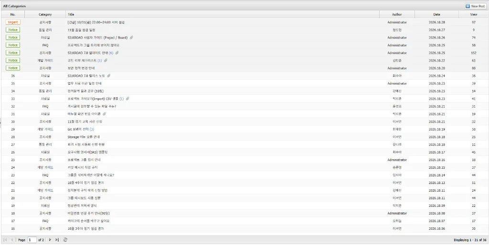
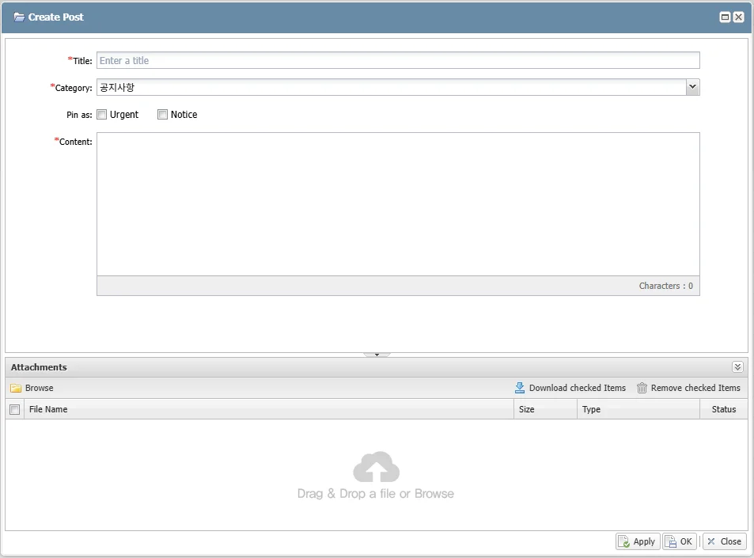

|
게시판(Board) 메뉴는 프로젝트와 관계없이 SILKROAD 의 전체 사용자가 함께 사용하는 전역 게시판(Global Board)이다. 게시글은 카테고리별로 관리하며, 카테고리마다 권한을 설정하여 조회하거나 작성할 수 있는 사용자를 지정한다.
구성 | 내용 |
카테고리 관리 | 카테고리 추가·이름 변경·삭제, 카테고리 권한 설정, 순서 변경 |
게시글 | 게시글 목록, 작성·조회·수정·삭제, 첨부파일 |
댓글(Comments) | 댓글·답글 작성, 댓글 수정·삭제 |
게시글 검색 | 읽기 권한이 있는 카테고리의 게시글 제목·본문 검색 |
상단 메뉴의 ‘Board’ 를 클릭하면 Global Board 화면이 표시된다.
|
구분 | 명칭 | 설명 |
| Refresh | 카테고리와 게시글 목록을 다시 불러오는 버튼 |
| Add Category | 새 카테고리 추가 관리자만 사용 가능 |
| 검색창 | 읽기 권한이 있는 모든 카테고리에서 게시글의 제목과 본문 검색 검색어를 입력하고 키보드 엔터를 누르면 검색 |
| 카테고리 목록 | 맨 위의 ALL 과 각 카테고리 표시 ALL 을 선택하면 읽기 권한이 있는 모든 카테고리의 게시글을 함께 표시 |
| New Post | 새 게시글 작성 선택한 카테고리에 Write 권한이 있을 때 사용 가능 |
| 게시글 목록 | 선택한 카테고리의 게시글 표시 Urgent·Notice 글은 목록 상단에 고정 |
| 페이지 이동 | 처음 이전 페이지 입력 다음 마지막 버튼으로 페이지 이동 오른쪽에 ‘Displaying x - y of z’ 형식으로 표시 범위와 전체 건수 표시 |
일반 사용자에게는 Read 또는 Admin 권한이 있는 카테고리만 표시된다. 권한이 하나도 설정되지 않은 카테고리는 일반 사용자에게 표시되지 않는다. |
좌측 카테고리 목록에서 카테고리를 마우스 오른쪽 버튼으로 클릭하면 표시되는 메뉴에서 카테고리를 관리한다. 사용할 수 없는 메뉴는 비활성화되어 표시되며, ALL 에는 우클릭 메뉴가 없다.
 |
메뉴 | 설명 | 사용 가능 |
Edit Name | 카테고리 이름 변경 | 관리자, 카테고리 Admin, Write 권한자 |
Delete Category | 카테고리 삭제 | 관리자, 카테고리 Admin |
Permissions | 카테고리 권한 설정 | 관리자, 카테고리 Admin |
① 좌측 툴바의 ‘Add Category’ 를 클릭한다.
② ‘Enter a new category name:’ 입력 창에 카테고리 이름을 입력하고 ‘OK’ 를 클릭한다.
③ ‘Model Access Permissions’ 창이 자동으로 표시된다. 카테고리를 사용할 역할이나 멤버를 추가하고 권한을 지정한다(카테고리 권한 설정 참고).
④ 권한 설정 창을 닫으면 ‘Category "X" has been created.’ 메시지가 표시되고, 새 카테고리는 ALL 바로 아래에 추가된다.
 |
카테고리 이름은 50자 이하로 입력한다. 50자를 넘으면 ‘Category name must be 50 characters or fewer.’, 이미 있는 이름(대소문자 구분 없음)이면 ‘A category with this name already exists.’ 가 표시된다. 권한을 설정하지 않은 카테고리는 일반 사용자에게 표시되지 않는다. 카테고리를 만든 뒤에는 반드시 Read 이상의 권한을 부여한다. |
① 카테고리를 우클릭하고 ‘Edit Name’ 을 선택한다.
② ‘Edit Category’ 창의 ‘Enter new name:’ 에 새 이름을 입력하고 ‘OK’ 를 클릭한다. 이름 규칙은 카테고리 추가와 같다.
③ ‘Category name has been updated.’ 메시지가 표시된다.
① 카테고리를 우클릭하고 ‘Delete Category’ 를 선택한다.
② 삭제 확인 창에서 ‘I understand and want to permanently delete this category.’ 를 체크한다.
③ ‘Delete’ 버튼을 클릭한다. ‘Delete’ 버튼은 확인 항목을 체크해야 활성화된다.
④ ‘Category "X" has been deleted.’ 메시지가 표시된다.
 |
카테고리를 삭제하면 그 카테고리의 게시글, 댓글, 첨부파일도 함께 삭제되며 화면에서 복구할 수 없다. |
① 카테고리를 우클릭하고 ‘Permissions’ 를 선택한다.
② 좌측 ‘Roles’ 또는 ‘Members’ 탭에서 권한을 부여할 대상을 더블클릭하여 추가한다. 새로 추가된 대상에는 Read 가 기본으로 체크된다.
③ 필요한 권한을 체크하고 ‘OK’ 버튼을 클릭한다. ‘OK’ 버튼은 변경 사항이 있을 때만 활성화되며, 대상을 빼려면 행의 휴지통 아이콘을 클릭한다.
 |
권한 | 설명 |
Read | 카테고리와 게시글 조회, 댓글 작성 |
Write | 게시글 작성, 본인이 작성한 게시글 수정·삭제, 카테고리 이름 변경 |
Delete | 카테고리의 모든 게시글과 댓글 삭제 |
Admin | 카테고리에 대한 모든 권한 다른 사용자의 게시글·댓글 수정·삭제, 카테고리 삭제, 권한 설정 포함 |
사용자 개인 권한과 소속 역할(Role)의 권한은 합쳐서 적용된다. 어느 한쪽에 권한이 있으면 해당 기능을 사용할 수 있다. |
① 카테고리 목록에서 순서를 바꿀 카테고리를 위아래로 끌어 원하는 위치에 놓는다.
② 변경한 순서는 모든 사용자에게 같게 적용된다. ALL 은 항상 맨 위에 고정된다.
카테고리 순서 변경은 관리자만 할 수 있다. |
 |
항목 | 설명 |
No. | 글 번호 상단 고정 글은 번호 대신 Urgent(주황) 또는 Notice(초록) 배지로 표시 |
Category | 게시글의 카테고리 ALL 을 선택했거나 검색했을 때만 표시 |
Title | 제목 댓글이 있으면 (n), 첨부파일이 있으면 클립 아이콘이 함께 표시 |
Author | 작성자 |
Date | 작성일(YYYY.MM.DD) |
View | 조회수 |
게시글은 Urgent 글, Notice 글, 그 밖의 글 순서로 정렬되며 각각 최신 글이 먼저 표시된다. Urgent·Notice 글은 모든 페이지의 상단에 표시된다. 한 페이지에 표시되는 글 수는 화면 높이에 맞게 자동으로 정해진다. |
① 게시글 목록 우측 상단의 ‘New Post’ 를 클릭한다.
② ‘Create Post’ 창에서 각 항목을 입력한다.
③ 필요하면 첨부파일을 추가한다(첨부파일 참고).
④ ‘OK’ 버튼을 클릭하면 저장하고 창을 닫는다. ‘Apply’ 버튼을 클릭하면 저장한 뒤 창을 닫지 않고 조회 화면으로 전환한다.
⑤ ‘Post has been successfully created!’ 메시지가 표시된다.
 |
항목 | 필수 | 설명 |
Title | ● | 게시글 제목 |
Category | ● | 게시글을 올릴 카테고리 Write 권한이 있는 카테고리만 표시되며, 현재 선택한 카테고리가 기본값(ALL 에서 작성하면 목록의 첫 번째 카테고리) |
Pin as | Urgent 또는 Notice 를 체크하면 목록 상단에 고정 둘 중 하나만 선택 가능 | |
Content | ● | 게시글 본문 편집기에서 서식 지정 가능 |
게시글을 작성하려면 해당 카테고리에 대한 Write 권한이 필요하다. 저장하지 않고 창을 닫으면 ‘You have unsaved changes. Close without saving?’ 확인 창이 표시된다. 작성 중에 다른 게시글이나 ‘New Post’ 를 열면 ‘You have unsaved changes. Discard them and continue?’ 확인 창이 표시된다. |
게시글 작성·수정 창 하단의 첨부파일 영역에서 파일을 관리한다. 목록에는 File Name, Size, Type, Status 가 표시된다.
기능 | 방법 |
파일 추가 | ‘Browse’ 를 클릭하여 파일을 선택하거나, 파일을 첨부 영역으로 끌어다 놓음 |
파일 다운로드 | 파일을 더블클릭 여러 파일은 체크한 뒤 ‘Download checked Items’ 클릭 |
파일 제거 | 제거할 파일을 체크하고 ‘Remove checked Items’ 클릭 |
게시글 하나에 최대 10개까지 첨부할 수 있으며, 10개를 넘기면 ‘Max 10 files allowed.’ 가 표시된다. 파일 다운로드는 저장된 파일만 가능하며, 제거한 파일은 게시글을 저장할 때 반영된다. |
① 게시글 목록에서 조회할 게시글을 클릭한다.
② 게시글 창에 작성자(Author), 조회수(Views), 작성일(Date), 수정일(Updated)과 본문이 표시되고, 우측에 댓글 영역이 표시된다.
③ 게시글을 열 때마다 조회수가 1 증가한다.
|
① 게시글 조회 창에서 ‘Edit’ 를 클릭한다. 또는 목록에서 게시글을 우클릭한 뒤 ‘Edit Post’ 를 선택한다.
② 내용을 수정하고 ‘OK’ 또는 ‘Apply’ 버튼을 클릭한다. ‘Cancel’ 을 클릭하면 수정을 취소하고 조회 화면으로 돌아간다.
③ ‘Post has been successfully updated!’ 메시지가 표시된다.
① 게시글 조회 창에서 ‘Delete’ 를 클릭한다. 또는 목록에서 게시글을 우클릭한 뒤 ‘Delete Post’ 를 선택한다.
② ‘Are you sure you want to delete this post?’ 확인 창에서 ‘Yes’ 를 클릭한다.
③ ‘Post has been deleted.’ 메시지가 표시된다.
게시글 수정은 카테고리 Admin 이나, Write 권한이 있는 작성자 본인이 할 수 있다. 게시글 삭제는 수정할 수 있는 사용자와 카테고리 Delete 권한자가 할 수 있다. 시스템 관리자(ADMIN, SUPER)는 모든 카테고리에서 카테고리 Admin 과 같은 권한을 가진다. |
게시글 조회 창 우측의 댓글 영역에서 댓글을 작성한다. 카테고리에 대한 Read 권한이 있으면 누구나 댓글을 작성할 수 있다.
|
① 댓글 입력란(Enter a comment)에 내용을 입력한다.
② 파일을 첨부하려면 ‘Attach File’ 을 클릭한다. 최대 10개까지 첨부할 수 있다.
③ ‘Send’ 를 클릭하면 ‘Comment has been posted.’ 메시지가 표시되고 댓글이 등록된다.
① 답글을 달 댓글의 ‘Reply’ 를 클릭한다.
② 답글 입력란(Enter a reply)에 내용을 입력하고 ‘Send’ 를 클릭하면 ‘Reply has been posted.’ 메시지가 표시된다.
③ 답글은 펼쳐진 상태로 표시되며, ‘Hide N replies’ / ‘Show N replies’ 로 접거나 펼친다.
답글에도 다시 답글을 달 수 있다. 화면에는 모두 한 단계로 표시되며, 답글 앞에 ‘@작성자’ 가 붙는다. |
① 댓글 우측의 ‘⋮’ 메뉴를 클릭한다.
② ‘Edit’ 를 선택하고 내용을 수정한 뒤 ‘Save’ 를 클릭하면 ‘Comment updated.’ 메시지가 표시된다.
③ ‘Delete’ 를 선택하고 ‘Are you sure you want to delete this comment?’ 확인 창에서 ‘Yes’ 를 클릭하면 ‘Comment deleted.’ 메시지가 표시되고 댓글이 삭제된다.
본인이 작성한 댓글은 언제든 수정하거나 삭제할 수 있다. 카테고리 Admin 은 다른 사용자의 댓글도 수정·삭제할 수 있고, Delete 권한자는 삭제할 수 있다. 답글이 달린 댓글을 삭제하면 그 자리에 ‘This comment has been deleted.’ 가 표시되고, 답글이 없으면 댓글이 목록에서 사라진다. |
① 좌측 검색창(Search in Global Board...)에 검색어를 입력하고 키보드 엔터를 누른다.
② 검색 결과가 게시글 목록에 표시되며, 목록 제목은 ‘Search Results: "검색어"’ 로 바뀐다.
③ 검색창의 ‘×’ 를 클릭하면 검색이 해제되고 ALL 목록으로 돌아간다.
|
읽기 권한이 있는 모든 카테고리에서 제목과 본문을 검색한다. 대소문자는 구분하지 않는다. 일치하는 글이 없으면 ‘No results found’ 가 표시된다. |
게시판에서 사용자 구분별로 사용할 수 있는 기능은 아래와 같다.
기능 | 관리자 | 카테고리 Admin | Write | Delete | Read |
카테고리 · 게시글 조회 | ● | ● | * | * | ● |
Add Category / 순서 변경 | ● | – | – | – | – |
Edit Name | ● | ● | ● | – | – |
Delete Category / Permissions | ● | ● | – | – | – |
New Post | ● | ● | ● | – | – |
게시글 수정 | ● | ● | 본인 글 | – | – |
게시글 삭제 | ● | ● | 본인 글 | ● | – |
댓글 작성 | ● | ● | * | * | ● |
본인 댓글 수정 · 삭제 | ● | ● | ● | ● | ● |
다른 사용자 댓글 수정 | ● | ● | – | – | – |
다른 사용자 댓글 삭제 | ● | ● | – | ● | – |
* 카테고리를 보려면 Read 권한이 필요하다. Write 나 Delete 권한을 부여할 때는 Read 권한도 함께 부여한다. |